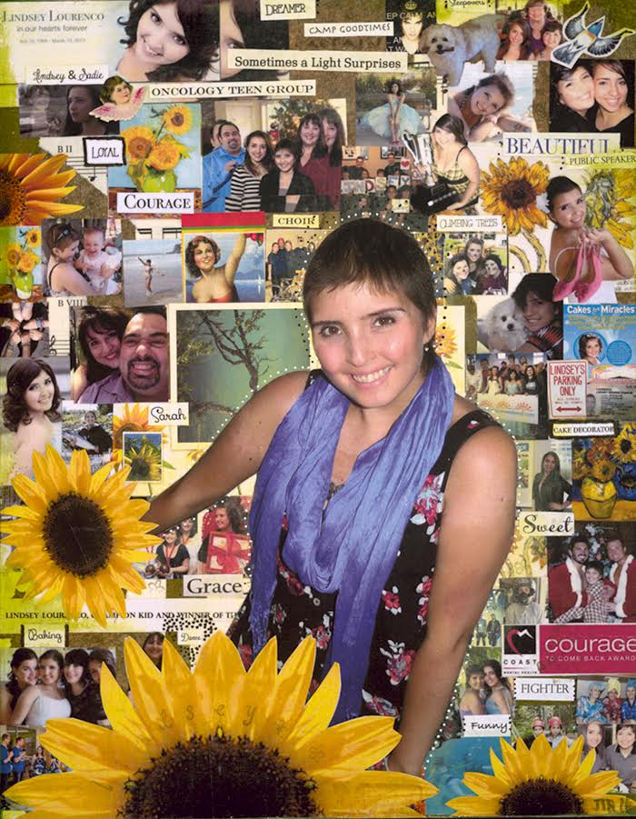

2016 Honourary Captain - Lindsey Lourenco the Warrior
July 18, 1994 ~ March 14, 2013
Lindsey the Child
Lindsey Lourenco and her identical twin, Sadie, were born on July 18, 1994. Born too early and far too tiny, her early days were spent in the ICU. Lindsey fought for every breath and she was weeks old before she had a name; somehow, no name was good enough.
Whether playing, fighting or getting into mischief, Lindsey and Sadie became inseparable. She and Sadie were a set, not individuals. They looked the same and had the same tastes, desires, hobbies, and friends.
Lindsey and Sadie never sat still unless it was to watch the same Disney movie over and over. Life was Girl Guides, piano, choir, swimming, skating, and dancing. Eventually, it was just dance. Lessons, festivals, costumes, and recitals made wonderful years. Summers were spent camping, fishing, swimming, and boating - two sun-kissed pony-tailed girls enjoyed the best of times.
In the summer of 2007, the girls had just finished Grade 7. They were on their first family trip to Portugal when Lindsey became frighteningly ill. The hospital in Lisbon diagnosed her with Acute Lymphoblastic Leukemia. The dream vacation ended with Lindsey being air-ambulanced from Portugal to BC Children’s Hospital. Life would never be the same.
Cancer. Who imagines a child getting cancer? But some do, and it's evil, cruel and heartbreaking.
Lindsey the Fighter
Cancer treatment for kids is much more intense than cancer treatment for adults. Chemotherapy made Lindsey very sick. She missed her first pivotal year of high school which robbed her of the glorious and awkward experiences that change little girls into teenagers. This is when we began to see Lindsey the Fighter.
In constant fear and pain, she always smiled and made her it her job to make everyone around her feel better. When Lindsey started Grade 9 she made up for lost time. She missed several days a week for chemo, but if she could make it back to school for even one class, she went to school. She wanted the full high school experience - the good and the bad. She never wanted special treatment. And she danced. She danced hard and loved it.
In Grade 10, just a few months after her maintenance chemo ended, Lindsey relapsed. The cancer was back, and it was bad. Lindsey actually felt guilty that she was going to “put the family through cancer again.” She apologized for having cancer! More chemotherapy, stronger chemotherapy, intense brain and full body radiation and a bone marrow transplant that kept her isolated for months and months. Her Sweet Sixteen birthday was spent in an isolation room hooked up to noisy, beeping machines. She had no hair, no immunity, no strength, no appetite, limited mobility and few visitors. Hard to imagine anything worse, but it can always get worse.
All the steroids and other treatments were killing her bones, a disease called AVN (a vascular necrosis). She was in constant pain, tired easily and was confined to a wheelchair. The treatment to cure the cancer was making living unbearable.
When Sadie was in Grade 12, Lindsey’s cancer came back for the third time. Her options were severely limited. There would be no focus on parties, new friends, university applications or graduation preparations. Her first round of chemo put her in the ICU and her family was faced with end-of-life decisions and preparations. Lindsey was dying. Nothing more could be done.
Lindsay the Warrior
This was when Lindsay the Fighter turned into Lindsey the Warrior. Her courage and strength was matched only by her will to live. She made herself well enough to graduate from high school and have a month at home, but when the cancer got worse, Lindsey made the brave decision to end all treatment. She stopped all drugs except pain meds and squeezed friends, family and fun into so little time. Eventually, she moved from BC Children’s Hospital to Canuck Place for her end-of-days.
Lindsey the Warrior battled and beat leukemia for 5½ years. Sick as she was, she graduated with 1st Class Honours after missing 2-1/2 years of high school. In 2012, she was BC Children’s Hospital Champion Child. As an ambassador for the hospital, she spoke at many events to raise awareness and funds for the hospital.
She also volunteered at the hospital and mentored other teens with cancer through BC Children’s Oncology Teen Group and as a camp junior leader at Camp Goodtimes. She came up with the idea of “Cakes for Miracles” at the Lourenco family’s Dairy Queen which donated $1 to BC Children’s Hospital for every cake sold. “Cakes” became a nation Dairy Queen campaign that raised hundreds of thousands of dollars for Canadian children’s hospitals.
A few days before Lindsey’s death, she was honoured with the Coast Capitol Credit Union Courage to Come Back Award. She inspired all her knew her with her good works despite terrible physical and mental hardship, yet she was modest about her achievements and never let people know how much she suffered. Lindsey made her life worthwhile even it was far too short.
The tragedy is that she wanted to do much more. She wanted to become a nurse so she could help other children and families. She wanted to improve equipment and cancer treatment at BC Children’s. She wanted more time for her first kiss, her first love, and time to dance, drive, and be a mother.
Lindsey took her last breath with her mother, father and precious sister Sadie at her side on March 14, 2013. She was 17 years old.
Lindsey’s maternal grandfather was a Norwegian fisherman who fished herring and helped out at the herring sale many years ago. Lindsey, like her mother before her, was fascinated as he cleaned, salted and pickled the herring. It is a special gift and a thrill to the Lourenco family to have Lindsey named as an Honorary Captain of the 2016 Herring Sale.
The Lourenco Family